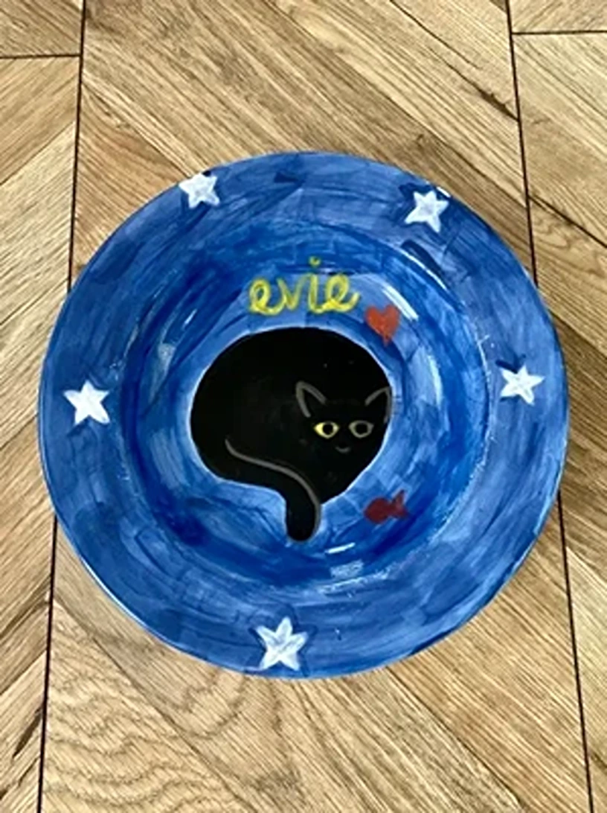
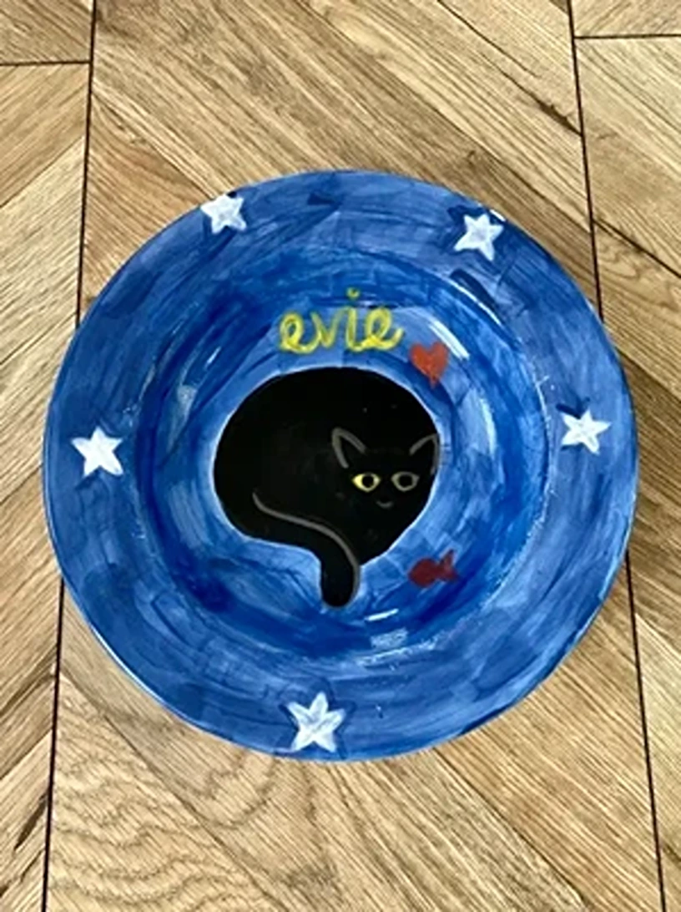

In Celebration of Evie
Our darling Evie was our first cat. She had a signature determination and poise, and we feel very lucky that she decided that she was coming home with us from the shelter. You may remember I mentioned a certain someone got in front of Salem. Evie meowed very loudly and clearly, did multiple figure of 8s around my ankles and her message was unmistakable. She wanted to come home with us. Sadly, her person had passed away and she had had 6 weeks in the cat rescue and our queen needed an improvement in her living standards asap!
From the beginning, Evie knew how to run the place. She had lived a life before we met and she had such a kind and calming presence. She was a proficient housekeeper, a litter tray expert. She played with toys with precision and strength. Salem didn’t have a look in, Evie was boss. She would curl up in our laps and loved to be petted. Her black fur was silky and soft, with a few single longer white hairs interspersed every so often - the stars in her night sky.

She hated the car with a passion and would yowl in protest. As a passenger, I became skilled in catching her puke in a disposable lunch box. Salem would help by letting her faceplant into his fur so she could snooze. She could run quite fast, but she didn’t like heights, the vet said she had arthritis in her hips. She adored tuna for dinner and could identify the sound of the tin opening from a distance and from a deep sleep, she would run towards us, sitting proud on her sparkly princess pillow waiting for dinner to be served. She loved naps, her favourite spot was perched on top of me, and was indignant if she was woken. She could curl up into a circle and liked to put her paw over her eyes to keep out the light.

After 2 wonderful years, our beloved girl became very sick at the start of November 2021. After 6 agonising weeks of trying every treatment and test and specialist and watching her go downhill, the vets advised us to make the devastating decision to let her go.

We’ll always miss you Evie, we hope you’re at peace. I’m so sorry your last few weeks were hard. Thank you for being in our lives, we will treasure every memory. You are forever loved 🖤